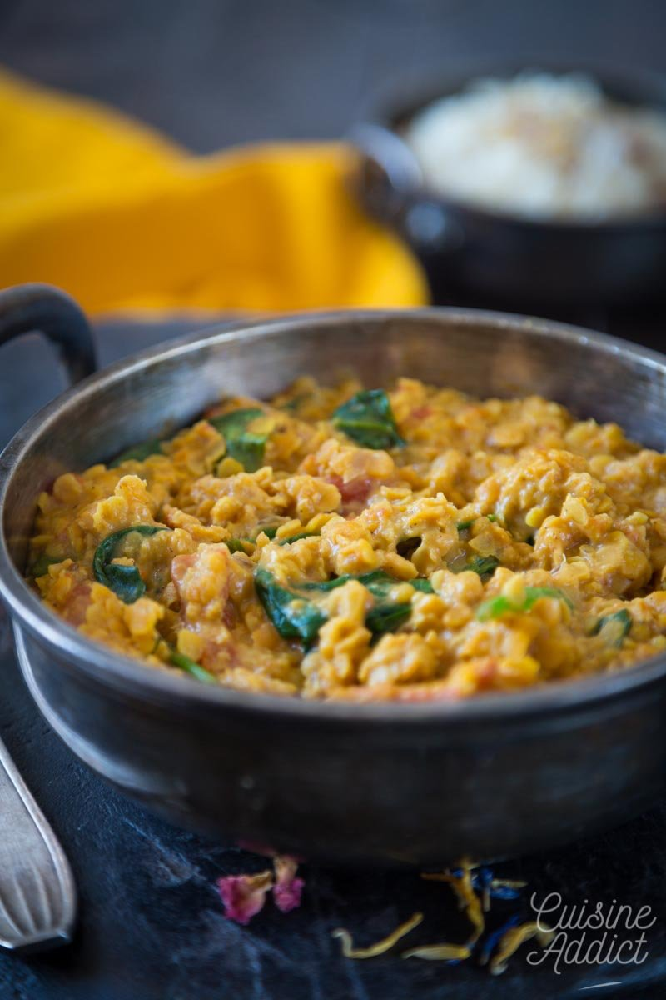

Dahl de lentilles corail
Ingredients
4×
- 300 g de lentilles corail
- 2 oignons jaunes
- 2 gousses d'ail
- 1 c. à s. d'huile d'olive
- 1 c. à c. de cumin
- 2 c. à c. de curcuma
- 400 g de tomates concassées
- 50 cl de lait de coco
- 50 cl de bouillon
- 1 citron jaune
- 200 g de pousses d'épinards

Préparation
Étape 1
Rincer 300 g de lentilles corail. Ciseler 2 oignons jaunes. Peler, dégermer et presser 2 gousses d'ail.
Étape 2
Rissoler les oignons dans 1 c. à s. d'huile d'olive. Ajouter l’ail, 1 c. à c. de cumin et 2 c. à c. de curcuma, cuire quelques instants.
Étape 3
Ajouter les lentilles, 400 g de tomates concassées, 50 cl de lait de coco et 50 cl de bouillon. Laisser mijoter 20min en remuant.
Étape 4
En fin de cuisson, ajouter le jus d’1 citron jaune et 200 g de pousses d'épinards. Servir avec du riz basmati.